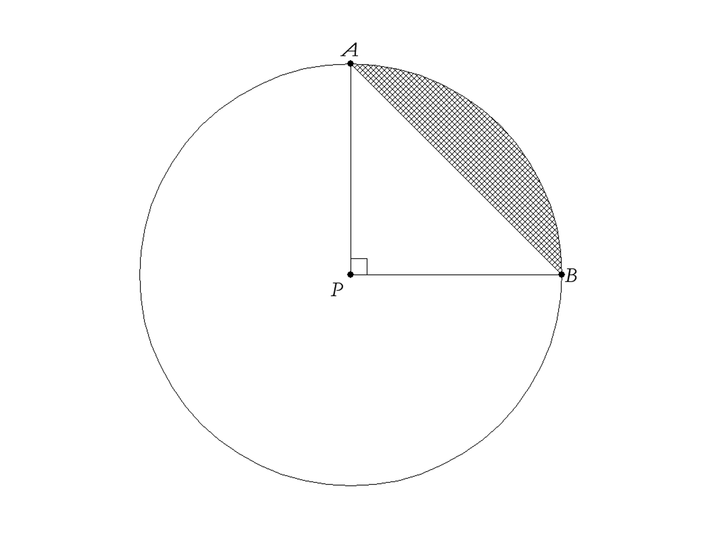
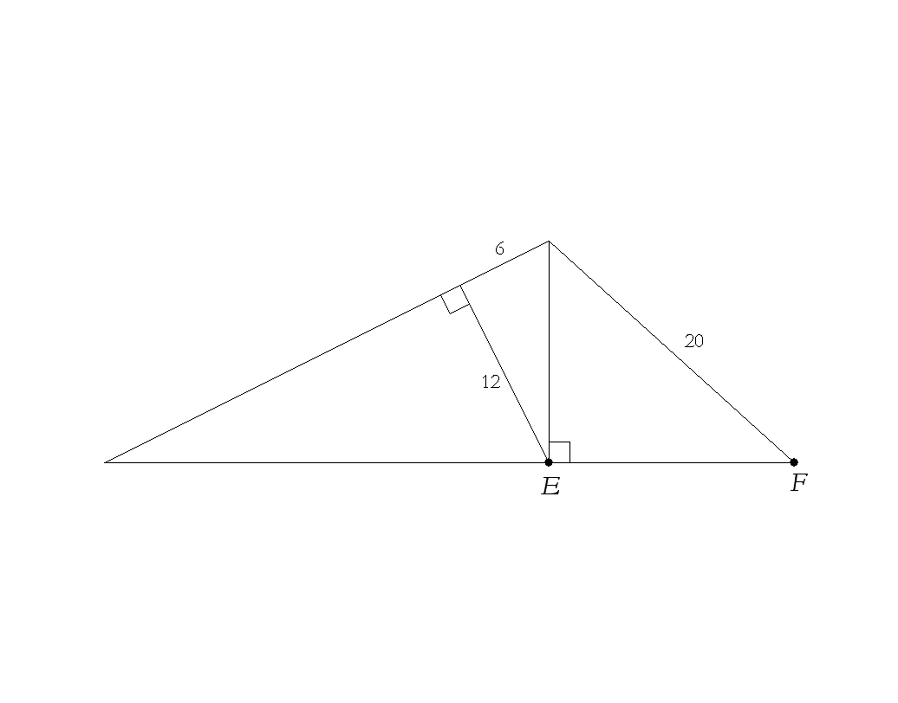

{% raw %}

<article>

  <section class="development">


    <h2>Development</h2>

    <p>As you learned last year, factoring a number means
    expressing it as the product of two or more other numbers. For
    example, 40 can be factored as $2 \cdot 20$. Of course, 40 can
    be factored in many other ways as well.</p>

    <div class="problem">
      <p>What are all the ways that 40 can be factored into two
      whole numbers?</p>
    </div>

    <p>Since 20 can be factored as $4 \cdot 5$, 40 can also be factored into 3
    numbers as $2 \cdot 4 \cdot 5$; and since 4 can also be
    factored into $2 \cdot 2$, 40 can be factored into 4 numbers as $2 \cdot 2
    \cdot 2 \cdot 5$. You might also think of saying it could be
    factored into
    5 or 6 numbers as $1 \cdot 2 \cdot 2 \cdot 2 \cdot 5$ or $1
    \cdot 1 \cdot 2 \cdot 2 \cdot 2 \cdot 5$, but since those
    aren’t really
    different from $2 \cdot 2 \cdot 2 \cdot 5$, we will agree that
    1 won’t “count” as a factor in the following problems, even
    though technically 1 is a factor of every number.
    Thus, at this point, 40 can’t be “broken down” any more than $2
    \cdot 2 \cdot 2 \cdot 5$ (we are restricting ourselves to
    positive integers here, so we wouldn’t consider turning 5 into
    $2.5 \cdot 2$ or into $- 5 \cdot - 1$).</p>

    <div class="problem">
      <p>Find two different ways to factor 72 into two positive
      integers. For each of your answers, continue factoring
      them until they can’t be “broken down” any more. Finally,
      rearrange each of your final factorings so that the factors
      are in order from smallest to largest.</p>
    </div>

    <div class="problem">
      <p>Factor 210 into the product of as many positive integers
      as possible. Compare your answer with a classmate’s. Based on
      this question and on question 2, what generalization might
      you now conjecture?</p>
    </div>

    <p>A number has been factored as much as possible when each of
    its individual factors cannot be broken down any more. Numbers
    greater than 1 that cannot be broken down any more (i.e.,
    cannot be factored into smaller positive integers) are called
      <em class="vocab">primes</em>. We say that the <em class="vocab">prime factorization</em> of 40 is $2 \cdot 2
    \cdot 2 \cdot 5$, or ${2^3} \cdot 5$ for short; we know it is
    a prime factorization because all of the factors (2, 2, 2, and
    5) are primes. As suggested by questions 2 and 3, every
    positive integer greater than 1 has a unique prime
    factorization. As we will see, this uniqueness means that
    rewriting a number in its prime factored form will often be
    extremely useful, even though all we have done is written the
    same number in a different way.</p>

    <p>Sometimes it can be tricky to know what the factors of a
    number are: that is, what divides into it evenly, leaving no
    remainder. For example, what numbers is 153 divisible by? It
    would clearly be helpful if one knew easy procedures (known as
    divisibility tests) that allowed one to see if smaller numbers
    divided arbitrary larger ones evenly. As a matter of fact, the
    divisibility tests for 2 and 5 are easy (what are they?), but
    it helps to know the tests for 3 and 11 as well (sadly, there
    is no easy test for 7).</p>

    <p>If, when you add up the digits of a number, its sum is
    divisible by 3, then the number is divisible by 3 as well; on
    the other hand, if the sum is not divisible by 3, the number is
    not divisible by 3. So 14353 is not divisible by 3 (because $1 + 4 + 3 + 5 + 3 = 16$, 
    which is not divisible by 3), while 55521 is. We will learn why
    the divisibility test for 3 is true later this chapter, but you
    might find it fun to ponder why it works on your own first!</p>

    <p>Some of you may remember learning in 9th grade that a number
    is divisible
    by 11 only when the “alternating sum” is divisible by 11. So
    4565 is divisible
    by 11 because is divisible by 11, as is 527494 because $+ 5 -
    2 + 7 - 4 + 9 - 4 = 11$, but 6587 is not because $+ 6 - 5 + 8
    - 7 = 2$
    is not divisible by 11.</p>

    <p>And now, a few problems to check your understanding of the
    above:</p>

    <div class="problem">
      <p>What is the largest number (other than 495 itself) that
      divides evenly into 495? Why do you know it’s the largest
      number that can do so?</p>
    </div>

    <div class="problem">
      <p>Is 4806 prime? How about 4807? Quickly name 5 numbers
      between 4800 and 4900 that are divisible by 11.</p>
    </div>

    <div class="problem">
      <p>Determine the prime factorization of 2310.</p>
    </div>

    <div class="problem">
      <p>Is 91 prime? How could you be sure of your answer?
      What about 221? Or 223?</p>
    </div>

    <div class="problem">
      <p>Come up with a procedure that can determine, with
      reasonable efficiency, whether a number is prime or not.</p>
    </div>

    <p>Determining in general if a positive integer is prime (i.e.,
    has no factors other than itself and 1) turns out to be an
    increasingly difficult task the larger the
    number becomes. In fact, one of the most powerful ways of
    encrypting data
    on the internet — the so-called “RSA algorithm” — is based on
    the difficulty
    of finding the prime factorization of very large (over 100
    digits!) integers.</p>

    <p>Prime factorization also allows us to determine the answers
    to questions about the relationships between two (or more)
    numbers. Remember that it can be helpful to write the final
    prime factorization using powers; for example, the prime
    factorization of 484 is ${2^2} \cdot {11^2}$.</p>

    <div class="problem">
      <p>What is the largest number that divides evenly into both
      216 and 270? This number is called the greatest common
      divisor of the two numbers and is written as gcd(180, 156).
      (For example, gcd(24, 36) = 12, as 12 is the largest integer
      that “goes into” both 24 and 36.)</p>
    </div>

    <div class="problem">
      <p>If your answer to question 9 involved testing out a lot of
      different numbers, try writing out the prime factorization of
      each original number (i.e. 216 and 270) first and see if you
      can use them to be more efficient in finding their gcd.</p>
    </div>

    <div class="problem">
      <p>Find gcd(168, 448) efficiently. How can you be sure you
      have found the largest possible number that “works”?</p>
    </div>

    <div class="problem">
      <p>Find gcd(${2^{16}} \cdot {3^4}$, ${2^{13}} \cdot {3^8}$), or put another way, gcd(5308416, 53747712). Looking at the
      original prime
      factorizations of each number, what do you notice about the
      prime factorization of your answer?</p>
    </div>

    <div class="problem">
      <p>Create a procedure that allows one to efficiently
      determine the gcd of two positive integers. Check it with 3
      examples that you make up, where at least one of the examples
      is similar to problem 12 (i.e., where the two numbers are
      large but have simple prime factorizations).</p>
    </div>

    <p class="new-page">Crucially, then, a prime factorization is important because
    all the factors of a number derive from the number’s prime
    factors. 24, for example, is ${2^3} \cdot 3$,
    and all of its factors — 2, 3, 4, 6, 8, 12, and 24 — are made
    up of combinations of the 2’s and 3’s found in the prime
    factorization.</p>

    <div class="problem">
      <p>In the following exercises, learn how powerful prime
      factorization is by solving them without your calculator!</p>

      <p class="problem-part">How can you check to see if $32
      \cdot 35$ equals $28 \cdot 40$ without determining either
      product?</p>

      <p class="problem-part">Juniper says that when she
      multiplies $6 \cdot 24 \cdot 55$ it is equal to $21 \cdot x$, where $x$ is an integer. Explain if she is telling the truth
      or not.</p>

      <p class="problem-part">Simplify $\frac{{64 \cdot 25 \cdot
      14 \cdot 33}}{{28 \cdot 44 \cdot 15}}$ as much as
      possible.</p>

      <p class="problem-part">What is the positive integer N for
      which ${22^2} \times {55^2} = {10^2} \times {N^2}$?<br>
        Copyright <a href="www.mathleague.com"><em>www.mathleague.com.</em></a></p>

      <p class="problem-part">Is ${6^4} \cdot {10^3}$ greater
      than, less than, or equal to ${8^2} \cdot {15^3} \cdot 6$?</p>
    </div>

    <p>The last few problems also are a reminder of the laws of
    exponents that you learned in middle school. Since ${5^6}$ is
    just $5 \cdot 5 \cdot 5 \cdot 5 \cdot 5 \cdot 5$ and ${5^4}$ is
    just $5 \cdot 5 \cdot 5 \cdot 5$,
    it makes sense that</p>

    <p>$\begin{array}{c} {5^6} \cdot {5^4} = (5 \cdot 5 \cdot 5
    \cdot 5 \cdot 5 \cdot 5) \cdot (5 \cdot 5 \cdot 5 \cdot 5)\\ =
    {5^{10}} \end{array}$</p>

    <p>Similarly, because $\frac{{{5^6}}}{{{5^4}}}$ is just
    $\frac{{5 \cdot 5 \cdot 5 \cdot 5 \cdot 5 \cdot 5}}{{5 \cdot 5
    \cdot 5 \cdot 5}}$, it makes sense that some pairs of 5’s in
    the numerator and denominator would “cancel” (because
      $\frac{5}{5} = 1$) and thus<br> 
      $\frac{{{5^6}}}{{{5^4}}} = \frac{5
    \cdot 5 \cdot 5 \cdot 5 \cdot 5 \cdot 5}{5
      \cdot 5 \cdot 5 \cdot 5}$<br> 
      $= \frac{5
    \cdot \cancel5 \cdot \cancel5 \cdot \cancel5 \cdot \cancel5 \cdot 5}{\cancel5
    \cdot \cancel5 \cdot \cancel5 \cdot \cancel5}$<br> 
      $= 5^2.$</p>

    <p>Lastly, ${({5^4})^3}$ is just $(5 \cdot 5 \cdot 5 \cdot 5)(5
    \cdot 5 \cdot 5 \cdot 5)(5 \cdot 5 \cdot 5 \cdot 5)$, so
    ${({5^4})^3} = {5^{12}}$.</p>

    <div class="problem">
      <p>By using the reasoning of the previous paragraph, finish
      the following equations, where $x$ is the base, and $a$ and $b$ are
      exponents:

      ${x^a} \cdot {x^b} =$ \quad $\frac{x^a}{x^b} =$ \quad ${({x^a})^b} = $</p>
    </div>

    <div class="problem">
      <p>For the second law in question 15, what are you assuming
      about $a$ and $b$? Try different values of $a$ and $b$ to clarify
      your answer.</p>
    </div>

    <div class="problem">
      <p>Simplify the following:</p>
	
      <p class="problem-part">${x^{13}} \cdot {x^7}$ </p>
      <p class="problem-part">$\frac{3^{28}}{3^{24}}$ </p>
      <p class="problem-part">${\left( {{x^5}} \right)^6}$ </p>
      <p class="problem-part">$(\frac{x^8 \cdot x^9}{x^6})^2$ </p>
    </div>

    <div class="problem">
      <p>What do you think ${3^0}$ should be equal to? Why? Come up
      with a specific argument to defend your view (and don’t use
      your calculator!).</p>
    </div>

    <div class="problem">
      <p>Let’s explore the expression a bit more.</p>

      <p class="problem-part">If ${3^4} =
      \frac{{{3^p}}}{{{3^q}}}$, then what are possible pairs of
      values for
      $p$ and $q$? Give at least 3 pairs.</p>

      <p class="problem-part">Using similar reasoning as in part
      a, what would it appear ${3^0}$ should be equal to? What
      about ${497^0}$?</p>

      <p class="problem-part">Which answer do you trust more,
      your answer to question 18, or your answer to part b above?
      Explain.</p>

      <p class="problem-part">Finally, make a chart of the powers
      of 3, starting at ${3^5}$ and going down to ${3^1}$. Looking
      at this chart, what do you think $3^0$ should be?</p>

      <p class="problem-part">Based on part d and your own
      conclusions, can you revise your answer a little to question
      16?</p>
    </div>

    <div class="problem">
      <p>What do you think ${6^{ - 3}}$ should be equal to? Is your
      answer the same as $- ({6^3})$? Again, come up with a
      specific argument to justify your answer.</p>
    </div>

    <div class="problem">
      <p>Let’s look a bit deeper into the idea of negative
      powers.</p>

      <p class="problem-part">Using similar reasoning as in
      question 19a, what would it appear ${6^{ - 3}}$ should be
      equal to? (Write your answer as a reduced fraction.) Does
      your answer equal what you thought in question 20?</p>

      <p class="problem-part">Make a chart of the powers of 6,
      starting at ${6^5}$ and going down to ${6^0}$. Following
      this idea, what do you think ${6^{ - 1}}$ would be? How about
      ${6^{ - 2}}$ and ${6^{ - 3}}$? Again, write your answers as
      fractions, rather than using decimals.</p>

      <p class="problem-part">Based on parts a and b and your own
      conclusions, can you revise your answer to question 16 even
      more than you did in question 19e?</p>
    </div>

    <div class="problem">
      <p>What should ${x^6}$ be multiplied by to equal ${x^2}$?
      What should ${x^6}$ be divided by to equal ${x^2}$? Test
      that your answers work with a specific value of $x$, and then
      explain how the answers are related to each other.</p>
    </div>

    <div class="problem">
      <p>Rewrite  $\frac{{{3^{ - 5}}}}{{{3^6}}}$,  $\frac{{{2^{
      - 8}}}}{{{2^{ - 3}}}}$, $\frac{{{x^{ - 6}}}}{{{x^{ - 4}}}}$ and $\frac{{{x^{ - 7}}}}{{{x^{ - 11}}}}$  so that your final
      expressions have only positive exponents.</p>
    </div>

    <div class="problem">
      <p>Simplify $\frac{{{x^8}{x^5}}}{{{x^3}{x^7}}} \;$, $\big(\frac{{{x^8}{x^5}}}{{{x^3}{x^7}}}\big)^4$, and $\big(\frac{{{x^8}{x^5}}}{{{x^3}{x^7}}}\big)^{-4}$. Then write each of your
      “simplified” answers with only positive exponents, if they
      aren’t already.</p>
    </div>

    <h2>Practice</h2>

    <div class="problem">
      <p>Without using a calculator, find all the prime factors of
      99792 that you can. Then, using a calculator, find the
      complete prime factorization of 99792.</p>
    </div>

    <div class="problem">
      <p>Find gcd(1240, 4400). If you wish, you can express your
      answer not as a number, but as the prime factorization of
      that number.</p>
    </div>

    <div class="problem">
      <p>Determine if $\frac{{60480}}{{2268}}$ is an integer
      without using a
      calculator!</p>
    </div>

    <div class="problem">
      <p>What values of $x$ and $y$ satisfy $36 \times {5^x} = 225
      \times {4^y}$?<br>
      Copyright <a href="www.mathleague.com"><em>www.mathleague.com.</em></a></p>
    </div>

    <div class="problem">
      <p>Arrange from biggest to smallest: ${3^{ - 3}}$, ${( -
      3)^3}$, ${2^{ - 2}}$, ${( - 2)^2}$, ${( - 3)^{ - 3}}$,
      ${( - 2)^{ - 2}}$.</p>
    </div>

    <div class="problem">
      <p>Simplify $\frac{{{2^7} \cdot {2^5}}}{{{2^4} \cdot {2^6}}}$, $\big(\frac{{{2^7} \cdot {2^5}}}{{{2^4} \cdot {2^6}}}\big)^3$, and $\big(\frac{{{2^7} \cdot {2^5}}}{{{2^4} \cdot {2^6}}}\big)^{-4}$ so that each answer is
      extremely simple: 2 raised to an integer power. Don’t use a
      calculator.</p>
    </div>

    <div class="problem">
      <p>Can ${3^4} \cdot {2^5}$ be written in the simpler form
      ${a^b}$ (where $a$ and $b$ are integers and $b \ne 1$)? If yes,
      check your answer by
      trying it out with specific numbers $a$ and $b$ just to be
      sure.</p>
    </div>

    <h2>Going Further</h2>

    <div class="problem">
      <p>Do the laws of exponents continue to hold when dealing
      with two variables? Let’s check this out.</p>

      <p class="problem-part">Does ${\left( {xy} \right)^5} =
      {x^5}{y^5}$? Try testing this “rule” with specific numbers,
      and, if it seems to work, see if you can prove the rule using
      algebra.</p>

      <p class="problem-part">Generalizing from part a, what
      would ${\left( {xy} \right)^a}$ be equal to?</p>

      <p class="problem-part">Using similar reasoning, how could
      one rewrite $\big( \frac{x}{y} \big)^a$?</p>

      <p class="problem-part">What would ${\left( {xy}
      \right)^8}{\left( {xy} \right)^4}$ equal? How about ${\left(
      {xy} \right)^3}{\left( {xy} \right)^{ - 7}}$?</p>

      <p class="problem-part">Following the pattern in part d,
      how could you rewrite ${\left( {xy} \right)^a}{\left( {xy}
      \right)^b}$?</p>

      <p class="problem-part">Can you rewrite $\frac{{{{\left(
      {xy} \right)}^a}}}{{{{\left( {xy} \right)}^b}}}$ as well?</p>

      <p class="problem-part">How about ${\left( {x + y}
      \right)^a}$— does it simplify easily? How can you check your
      answer?</p>
    </div>

    <div class="problem">
      <p>Now let’s apply what we’ve learned in question 32.</p>


    <p class="problem-part">
    Can $\frac{{{x^5}{y^7}}}{{{y^3}{x^2}}}$ be simplified? How
    about $\big(\frac{{{x^5}{y^7}}}{{{y^3}{x^2}}}\big)^3$? Finally, howzabout $\big(\frac{{{x^5}{y^7}}}{{{y^3}{x^2}}}\big)^{-6}$?</p>

    <p class="problem-part">Simplify $\frac{{{2^3} \cdot
    {3^4}}}{{{2^5} \cdot 3}}$ and $\big(\frac{{{2^3} \cdot
    {3^4}}}{{{2^5} \cdot 3}}\big)^{-2}$so that your answers are in the
    form ${2^x}{3^y}$, where $x$ and $y$ are integers.</p>

    <p class="problem-part">Simplify $\big(\frac{4x^{-3}y^7}{x^8y^3}\big)^{-2}$ and $\big(\frac{x^8y^3}{4x^{-3}y^7}\big)^2$. Are you surprised by the two
    answers?</p>

    <p class="problem-part">Rewrite $\big(\frac{kx^ay^b}{x^cy^d}\big)^e$ so that your answer is in the form
      ${k^P}{x^Q}{y^R}$, where <nobr>$P$</nobr>, <nobr>$Q$,</nobr> and $R$ are integers that you
    determine.</p>
    </div>
    
    <div class="problem">
      <p>Here are a couple more doozies based on what you learned
      in question 33. Don’t use a calculator!</p>

      <p class="problem-part">What simple number is equivalent
      to
      ${\left( {{3^2} \cdot {7^4}} \right)^4}{\left( {{5^8} \cdot
      {7^{ - 5}}} \right)^3}{\left( {3 \cdot {5^4}} \right)^{ -
      6}}$?</p>

      <p class="problem-part">What is $\big(\frac{16g^6}{9^6t^{-5}}\big)^{-2} \cdot \big(\frac{3^6 t^{-3}}{2^2 g^3}\big)^4 $, simplified?</p>
    </div>

    <div class="problem">
      <p>You know from the laws of exponents that $x^2x^5 = x^7$, or that
      ${x^a}{x^b} = {x^{a + b}}$. We can use this identity to
      help us think of square roots in a different way — as an
      exponent.</p>

      <p class="problem-part">What does $(\sqrt x )(\sqrt x )$ equal?</p>

      <p class="problem-part">So if $\sqrt x = {x^N}$, what
      must $N$ be?</p>

      <p class="problem-part">If $p \cdot p \cdot p = x$, what
      must $p$ equal, in terms of $x$? Put
      another way, if we say that $p = {x^N}$, what does $N$
      equal?

      (This number is called a “cube root” of $x$, i.e., since $2
      \cdot 2 \cdot 2 = 8$, 2 is a cube root of 8. This can also
      be written as $2 = \sqrt[3]{8}$, where the $\sqrt[\uproot{8}\leftroot{-1}3]{\quad}$ symbol indicates “cube root”.)</p>

      <p class="problem-part">If ${p^5} = x$, what would $p$ equal
      in terms of $x$? That is, if we say that $p = {x^N}$, what
      does $N$ equal?</p>

      <p class="problem-part">If $p = \big(\frac{1}{32}\big)^{(\frac{1}{5})}$, what would $p$ be? If $q =
      \sqrt[5]{{\frac{1}{{32}}}} \;$, what is $q$ ?</p>

      <p class="problem-part">In general, then, if $\sqrt[n]{x} =
      {x^N}$, how are $N$ and $n$ related? Give a specific example or
      two to clarify.</p>
    </div>

    <div class="problem">
      <p>Using what you learned in question 35, simplify each
      expression as far as possible. No calculator necessary,
      although feel free to check!</p>

      <p class="problem-part">$\left( {{{16}^{\frac{1}{2}}}}
      \right) + \left( {{{16}^{\frac{1}{4}}}} \right)$</p>

      <p class="problem-part">${64^0} + {64^{\frac{1}{3}}} +
      {64^{\frac{1}{2}}} + {64^1}$</p>

      <p class="problem-part">$\left( {\sqrt[3]{{241}}}
      \right)\left( {{{241}^{\frac{1}{3}}}} \right)\left(
      {\sqrt[3]{{241}}} \right)$</p>

      <p class="problem-part">$\big(81^{\frac{1}{4}}\big)^{-2}$</p>

      <p class="problem-part">${125^{\frac{1}{3}}} \cdot {36^{ -
      \frac{1}{2}}}$</p>
    </div>

    <div class="problem">
      <p>You now know how to calculate
      ${64^0},\;{64^{\frac{1}{3}}},\;{64^{\frac{1}{2}}},\;{64^1}$ and ${64^2}$. Let’s broaden our horizons even more!</p>

      <p class="problem-part">Suppose a friend told you that he
      had just figured out how to calculate ${64^{1.5}}$. Based on
      what you already know about powers of 64, about how big a
      number do you think this is? Explain.</p>

      <p class="problem-part">${64^{1.5}}$ can also be written as
      ${64^N}$, where $N$ is a simple
      fraction. What is $N?$</p>

      <p class="problem-part">Now further rewrite ${64^N}$ by
      using the property of
      exponents that tells us we can rewrite ${x^{12}}$ as ${\left(
      {{x^3}} \right)^4}$.</p>

      <p class="problem-part">Using your result from part c, you
      should now be able
      to compute a precise answer to ${64^{\frac{3}{2}}}\;( =
      {64^{1.5}})$.
      What is it, and does it agree with your answer in part a?</p>

      <p class="problem-part">Similarly, what would
      ${64^{\frac{2}{3}}}\;( = 64\overline {^{.666}} )$ equal?
      How about ${4^{2.5}}$?</p>

      <p class="problem-part">Finally, what is ${7^{1.3}}$?
      Explain what it means to raise a
      number to the 1.3 power. Once you’ve done that, do the same
      for ${7^{1.29}}$.</p>
    </div>

    <div class="problem">
      <p>One can also solve equations quite easily when they
      contain powers. For example, ${x^3} = 11$ can be solved by
      taking advantage of the laws of exponents and raising
      each side to the 1/3 power: ${\left( {{x^3}}
      \right)^{\frac{1}{3}}} = {11^{\frac{1}{3}}}$, the idea being
      that because the exponents on the left side multiply, the
      exponent becomes “1”, and so it simplifies to $x =
      {11^{\frac{1}{3}}}$ (or $\sqrt[3]{{11}}$).

      Solve the following equations for $x$, keeping in mind the
      strategies in the paragraph above:</p>

      <p class="problem-part">${x^5} = 32$</p>

      <p class="problem-part">${x^{\frac{1}{5}}} = 32$</p>

      <p class="problem-part">$3{x^3} = 81$</p>

      <p class="problem-part">$\frac{16}{64} \; x^5=8$</p>

      <p class="problem-part">${x^{\frac{2}{3}}} = 9$</p>

      <p class="problem-part">${x^{2.71}} = 126$</p>

      <p class="problem-part">$5x^{3.87}=1000$</p>
    </div>

    <h2>Practice
    (No Calculators!!)</h2>

    <div class="problem">
      <p>Simplify ${\left( {{x^{ - 17}}{x^8}} \right)^{ - 3}}$ in
      two different ways:</p>

      <p class="problem-part">By simplifying inside the
      parentheses first, and then applying the outside
      exponent.</p>

      <p class="problem-part">By applying the outside exponent
      first, and then simplifying.</p>

      <p class="problem-part">Confirm that your answers in parts
      a and b are the same.</p>
    </div>

    <div class="problem">
      <p>Simplify $\big(\frac{p^9q^{-5}}{q^7p^4}\big)^3$
        and $\big(\frac{p^9q^{-5}}{q^7p^4}\big)^{-3}$. What do you notice?</p>
    </div>

    <div class="problem">
      <p>Does $\big(\frac{w^6t^7}{t^{-8}}\big)^4$ equal $\big(\frac{w^3t^{20}}{w^{-5}}\big)^3$? Explain.</p>
    </div>

    <div class="problem">
      <p>Don’t use a calculator for this problem.</p>

      <p class="problem-part">Divide $\frac{{10}}{3} \div
      \frac{5}{2} \:$.</p>

      <p class="problem-part">Factor $4x^3 – 12x^2$.</p>

      <p class="problem-part">Factor $x^2 – 25$.</p>

      <p class="problem-part">Solve for $x$: $x(x+3) – 1= \; –3$.</p>

      <p class="problem-part">Solve for $x$, looking up the
      quadratic formula if necessary: $x^2 – 4x – 6=0.$</p>
    </div>

    <div class="problem">
      <p>What is $\frac{(m^{-4}n^{12})^{-5}}{(n^{-6}m^3)}$ simplified?</p>
    </div>

    <div class="problem">
      <p>Simplify $\big(\frac{12x^{-2}y^5}{8x^{-6}y^9}\big)^3$ .</p>
    </div>

    <div class="problem">
      <p>The volume of a cube is 2197 cm$^3$. Find the total surface
      area of the cube. (Calculators allowed.)</p>
    </div>

    <div class="problem">
      <p>Write ${5^5} \cdot {5^8} \cdot {8^5} \cdot {8^8}$ in the
      form $a^b$.</p>
    </div>

    <div class="problem">
      <p>What is $\sqrt {{{17}^2}}$? What is
      $\sqrt[3]{{{5^3}}}$?</p>
    </div>

    <div class="problem">
      <p>Which is bigger: $\sqrt[3]{37^2}$or $(\sqrt[3]{37})^2$? Why?</p>
    </div>

    <div class="problem">
      <p>What does $8^{(\frac{4}{3} \;)} \cdot 4^{(\frac{3}{2} \;)}$ equal?</p>
    </div>

    <div class="problem">
      <p>Simplify $\sqrt[3]{\sqrt[4]{x^{24}}}$.</p>
    </div>

    <div class="problem">
      <p>Write ${25^4} \cdot {125^{ - 2}}$ as a power of 5.</p>
    </div>

    <div class="problem">
      <p>Solve $2r^4=162$.</p>
    </div>
  </section>


  <section class="problems">
  <h2>Problems (Still No Calculators!)</h2>
    <div class="problem">
      <p>How many prime numbers under 10000 have digits that add up
      to 9?</p>
    </div>

    <div class="problem">
      <p>If the sum of two prime numbers is 999, what is their
      product?<br>
        Copyright <a href="www.mathleague.com"><em>www.mathleague.com.</em></a></p>
    </div>

    <div class="problem">
      <p>Explain why the product of any three
      consecutive integers has to be divisible by 6.</p>
    </div>

    <div class="problem">
      <p>The dimensions of a rectangular box (in cm) are all
      positive integers, and the volume of the box is 2002 cm$^3$.
      What is the least possible sum of the three dimensions?</p>
    </div>

    <div class="problem">
      <p>(Calculators allowed.) What is the smallest positive
      integer that is NOT a factor of $1 \times 2 \times 3 \times 4
      \times 5 \times 6 \times ... \times 18 \times 19 \times 20?$<br>
      Copyright <a href="www.mathleague.com"><em>www.mathleague.com.</em></a></p>
    </div>

    <div class="problem">
      <p>Does ${6^6} + {6^6} + {6^6} + {6^6} + {6^6} + {6^6}$ equal
      ${36^6}$? ${6^{36}}$? ${6^7}$? ${36^{36}}$? Or something
      else in the form ${a^b}$? Explain.<br>
      (Appeared on AMC-12 competition, 1992)</p>
    </div>

    <div class="problem">
      <p>Express $\frac{{{2^1} + {2^0} + {2^{ - 1}}}}{{{2^{ - 2}} +
      {2^{ - 3}} + {2^{ - 4}}}}$ as a single, simple fraction.
      (Appeared on AMC-12 competition, 1987)</p>
    </div>

    <div class="problem">
      <p>When 270 is divided by the odd number X, the answer is a
      prime number. What is X?<br>
      Copyright <a href="www.mathleague.com"><em>www.mathleague.com.</em></a></p>
    </div>

    <div class="problem">
      <p>What is the simplest expression for
      $\frac{{{2^{40}}}}{{{4^{20}}}}$?<br>
        Copyright <a href="www.mathleague.com"><em>www.mathleague.com.</em></a></p>
    </div>

    <div class="problem">
      <p>What is the simplified value of
      $\frac{{{{4444}^4}}}{{{{2222}^4}}}$?<br>
        Copyright <a href="www.mathleague.com"><em>www.mathleague.com.</em></a></p>
    </div>

    <div class="problem">
      <p>If you double $x$, by what factor does the expression
      $\frac{{{x^7}{x^{ - 2}}}}{{{x^3}}}$ grow?</p>
    </div>

    <div class="problem">
      <p>A composite number is a whole number that is greater than
      1 and not prime — that is, it has factors other than itself
      and 1.</p>

      <p class="problem-part">What is the smallest composite
      number that is not divisible by 2 or 3?</p>

      <p class="problem-part">What is the smallest composite
      number that is not divisible by 2, 3, or 4?</p>

      <p class="problem-part">What is the smallest composite
      number that is not divisible by 2, 3, 4, or 5?</p>

      <p class="problem-part">(Calculators allowed.) Now
      determine the smallest composite number that is not divisible
      by 2, 3, 4, 5, 6, 7, or any of the numbers up to and
      including 100.</p>
    </div>

    <div class="problem">
      <p>Order these, from smallest to largest,
      without using a calculator: ${1000^{\frac{1}{{1000}}}}$, $\big(\frac{1}{1000}\big)^{1000}$
      , ${1000^{ - 1000}}$, $\big(\frac{1}{1000}\big)^{\frac{1}{1000}}$, $\big(\frac{1}{1000}\big)^{-1000}$</p>
    </div>

    <div class="problem">
      <p>You are going to randomly choose three integers
      (repetition allowed) from 0 to 5, and call them $k$, $m$, and
      $n$.&nbsp;What’s the probability that ${2^k}{3^m}{5^n}$ is NOT
      divisible by 5?</p>
    </div>

    <div class="problem">
      <p>What is the only number $x$ which satisfies $\sqrt {1992} =
      1992\sqrt x $?<br>
        Copyright <a href="www.mathleague.com"><em>www.mathleague.com.</em></a></p>
    </div>

    <div class="problem">
      <p>In circle P, the length of $\overline {AB} $ is $\sqrt
      {50} $. Find the area of the shaded region.</p>
      
    <figure>
      
    </figure>
    </div>


    <div class="problem">
      <p>Find EF exactly.</p>
      <figure>
        
      </figure>
    </div>

    <div class="problem">
      <p>Triangle ABC has a right angle at C.
      If sin B $= \frac{2}{3}$ what is tan B, expressed
      as a fraction?</p>
    </div>

    <div class="problem">
      <p>Why must $\sqrt {17} $ be a non-terminating
      decimal? Put another way, why can’t
      a terminating decimal multiplied by
      itself = 17?</p>
    </div>

    <div class="problem">
      <p>What is the positive number $x$ for which $x = \sqrt[3]y$  and $\sqrt y = 8$?<br>
        Copyright <a href="www.mathleague.com"><em>www.mathleague.com.</em></a></p>
    </div>

    <div class="problem">
      <p>If ${x^{64}} = 64$, what is the exact value of ${x^{32}}$?<br> 
      Copyright <a href="www.mathleague.com"><em>www.mathleague.com.</em></a></p>
    </div>

    <div class="problem">
      <p>In simplest form, what is the numerical value of $\sqrt
      {1985} \,\,\sqrt[3]{{1985}}\,\,\sqrt[6]{{1985}}$?<br>
      Copyright <a href="www.mathleague.com"><em>www.mathleague.com.</em></a></p>
    </div>

    <div class="problem">
      <p>Which kind of number does not appear to have a 10th root?
      Which kind of number has an integer as its 10th root?</p>
    </div>

    <div class="problem">
      <p>If $\sqrt[5]{x} = 4$ , what is the value of $\sqrt x $?<br>
        Copyright <a href="www.mathleague.com"><em>www.mathleague.com.</em></a></p>
    </div>

    <div class="problem">
      <p>What does $\sqrt 7 \sqrt 3 \sqrt 2 \sqrt 5 \sqrt {10}
      \sqrt {21} $ equal? Think before calculating!!</p>
    </div>

    <div class="problem">
      <p>Rewrite $\big(\frac{1}{4}\big)^{-\frac{1}{4}}$ as the root (i.e. square root,
      cube root, and so on—you choose !) of an integer that is NOT
      4.</p>
    </div>

    <div class="problem">
      <p>What is the value of $x$ which satisfies $\sqrt[3]{{x\sqrt x
      }} = 4$?<br>
        Copyright <a href="www.mathleague.com"><em>www.mathleague.com.</em></a></p>
    </div>

    <div class="problem">
      <p>If $x \ge 0$, then $\sqrt {x\sqrt {x\sqrt x } } $ is
      equivalent to ${x^N}$. What is $N$?</p>
    </div>

    <div class="problem">
      <p>The function $s$ takes a number and
      outputs the sum of its “proper” divisors, meaning that 1 is
      considered to be a
      divisor but the number itself is not.</p>

      <p class="problem-part">Find $s(8)$.</p>

      <p class="problem-part">A perfect number is a number $n$ for
      which $s(n)=n$. How many perfect numbers are between 2 and
      10?</p>

      <p class="problem-part">An abundant number is a number n
      for which $s(n)&gt;n$. Find the first abundant number.</p>

      <p class="problem-part">A pair of numbers is said to be
      amicable when the proper divisors
      of each number add up to the
      other number.</p>

      <p class="problem-part">Verify that 220 and 284 are an
      amicable pair.</p>

      <p class="problem-part">Write the definition of amicable
      numbers using the $s(n)$ notation.</p>
    </div>


    <h2>Exploring in Depth (No Calculators Still!)</h2>
    
  
    <div class="problem">
      <p>Which is bigger, ${2^{3000}}$ or ${3^{2000}}$? Prove your
      answer.<br>
      Copyright <a href="www.mathleague.com"><em>www.mathleague.com.</em></a></p>
    </div>

    <div class="problem">
      <p>Write $\frac{{{{15}^{30}}}}{{{{45}^{15}}}}$ in the form
      ${a^b}$, if possible.
      If it is not possible, explain why not.<br>
      (Appeared on AMC-12 competition, 1993)</p>
    </div>

    <div class="problem">
      <p>If ${3^x} = 5$, what is the value of ${3^{\left( {2x + 3}
      \right)}}$?<br>
        Copyright <a href="www.mathleague.com"><em>www.mathleague.com.</em></a></p>
    </div>

    <div class="problem">
      <p>What is the integer n for which ${5^n} + {5^n} + {5^n} +
      {5^n} + {5^n} = {5^{25}}$?<br>
      Copyright <a href="www.mathleague.com"><em>www.mathleague.com.</em></a></p>
    </div>

    <div class="problem">
      <p>Take any 6-digit number that repeats 3 digits twice in the
      same order, like 596596. It will always be divisible by 7,
      11, and 13. Why? (Calculators allowed.)</p>
    </div>

    <div class="problem">
      <p>How many distinct pairs of positive
      integers $\left( {m,n} \right)$ satisfy ${m^n} = {2^{20}}$?<br>
      Copyright <a href="www.mathleague.com"><em>www.mathleague.com.</em></a></p>
    </div>

    <div class="problem">
      <p>How many positive integers less than 50 have an odd number
      of positive integer divisors?<br>
      (Appeared on AHSME 41 competition)</p>
    </div>

    <div class="problem">
      <p>If $x &gt; y &gt; 0$, then express
      $\frac{{{x^y}{y^x}}}{{{y^y}{x^x}}}$ using only a single
      exponent.<br>
      (Appeared on AMC-12 competition, 1992)</p>
    </div>

    <div class="problem">
      <p>Earlier, you learned how to calculate a number such as
      ${8^{\frac{2}{3}}}$.</p>

      <p class="problem-part">In fact, there are two
      different
      plausible ways of evaluating a number
      like ${8^{\frac{2}{3}}}$: as $\big(8^\frac{1}{3}\big)^2$ or as ${\left(
      {{8^2}} \right)^{\frac{1}{3}}}$.
      Are these two numbers in fact equal? Explain why or why
      not.</p>

      <p class="problem-part">Try calculating both
      ${27^{\frac{4}{3}}}$ and ${32^{\frac{6}{5}}}$ in each of the
      ways described in part a. Which is easier, and why?</p>
    </div>

    <div class="problem">
      <p>Multiplying and dividing numbers and/or expressions that
      have roots and/or exponents in them becomes considerably
      easier if all the roots are converted to exponents. Also
      often helpful in harder problems is to try to give all the
      exponents the same base. For example, the easiest way to
      simplify ${2^5} \cdot {8^4}$ is to think of “8” as “${2^3}$”:</p>
   

    <figure>
      $\begin{array}{c} {2^5} \cdot {8^4} = {2^5} \cdot {\left(
      {{2^3}} \right)^4}\\ = {2^5} \cdot {2^{12}}\\ = {2^{17}}.
      \end{array}$
    </figure>

    <p class="Development---Problem-Flow para-style-override-4">
    Simplify the following:


    <p class="problem-part">${4^3} \cdot {64^5}$</p>

    <p class="problem-part">${2^{ - 4}} \cdot {32^2}$</p>

    <p class="problem-part">$\frac{{{3^5} \cdot
    {{18}^4}}}{{16}}$</p>

    <p class="problem-part">${7^{\frac{5}{6}}} \cdot {49^3}$</p>

    <p class="problem-part">
    $\frac{{{{81}^{\frac{3}{8}}}}}{{{{27}^{\frac{1}{2}}}}}$</p>
 </div>
  
    <div class="problem">
      <p>(Calculators allowed.) In addition to the greatest common
      divisor, another interesting numerical concept is called the
      least common multiple.</p>

      <p class="problem-part">What is the smallest positive
      integer that is a multiple of 30 and also a multiple of 42?
      This number is called the “least common multiple” and is
      written as lcm(30, 42). (For example, lcm(6, 8) = 24, as 24
      is the smallest number that is both a multiple of 6 and a
      multiple of 8.)</p>

      <p class="problem-part">If your answer to part a involved
      testing a large amount of numbers, try using the prime
      factorizations of the numbers to help you see how to find the
      lcm efficiently.</p>

      <p class="problem-part">Find lcm(84, 126) efficiently. How
      can you be sure you have found the smallest possible number
      that works?</p>

      <p class="problem-part">Find lcm(${2^{16}} \cdot {3^4}$,
      ${2^{13}} \cdot {3^8}$). Looking at the original prime
      factorizations of each number, what do you notice about the
      prime factorization of
      your answer?</p>

      <p class="problem-part">Create a procedure that allows one
      to
      efficiently determine the lcm of two numbers. Once again,
      check with 3 examples you devise, with at least one of the
      examples similar to part d.</p>
    </div>

    <div class="problem">
      <p>Take any two positive integers $x$ and $y$. (Calculators
      allowed.)</p>

      <p class="problem-part">Find their gcd and lcm.</p>

      <p class="problem-part">Multiply the gcd and lcm
      together.</p>

      <p class="problem-part">Now multiply the original numbers $x$
      and $y$ together. What do you notice?</p>

      <p class="problem-part">Try parts a through c with 5
      different
      pairs of positive integers $x$ and $y$.</p>

      <p class="problem-part">What is going on here? Explain
      carefully in terms of the prime
      factorizations of $x$ and $y$. (Hint:
      Go back to questions 13 and 92e
      and look at how you were able to find the gcd and the lcm
      efficiently, and compare.)</p>
    </div>

    <div class="problem">
      <p>Sometime around 5th grade, you were taught to add
      fractions $\frac{a}{b}$ and $\frac{c}{d} \;$ by finding a common denominator.
      Assume
      $b$ and $d$ are positive.</p>

      <p class="problem-part">Explain whether you should be
      finding the gcd or the lcm of $b$ and $d$ if you want to find
      their smallest possible common denominator.</p>

      <p class="problem-part">By the way, why do you need a
      “common” denominator to add fractions anyway? Why not just
      add them using different denominators?</p>
    </div>

    <div class="problem">
      <p>If $x = \sqrt {2000} $ and $y = \sqrt {2001} $, what is
      the simplified numerical value of ${(x + y)^2} + {(x - y)^2}$?<br> 
        Copyright <a href="www.mathleague.com"><em>www.mathleague.com.</em></a></p>
    </div>

    <div class="problem">
      <p>What on earth could ${4^{\sqrt 2 }}$ mean? Could you
      determine approximately how big it would have to be?</p>
    </div>

    <div class="problem">
      <p>Let’s learn about how simplest radical form directly
      relates to prime factorization. (Calculators allowed.)</p>

      <p class="problem-part">Put $\sqrt {99} $ and $\sqrt
      {884} $ into simplest radical form.</p>

      <p class="problem-part">Explain, for an arbitrary integer
      $n$, how you would go about putting $\sqrt n $ into simplest
      radical form.</p>

      <p class="problem-part">Now try simplifying $\sqrt {907}
      $. What makes you confident that you are definitely in
      simplest radical form?</p>

      <p class="problem-part">Explain why you don’t have to test
      any numbers above 31 when checking to see if 907 is
      prime.</p>

      <p class="problem-part">Now try simplifying $\sqrt {529}
      $, $\sqrt {551} $, and $\sqrt {557} $.</p>

      <p class="problem-part">Given what you learned in parts c
      through e, can your answer in part b be improved or
      clarified? Are you confident your method will efficiently put
      $\sqrt n $ into simplest radical form? Explain.</p>

      <p class="problem-part">Try your method on $\sqrt {343} $,
      $\sqrt {379} $, $\sqrt {403} $, $\sqrt {765} $, $\sqrt
      {1517} $, $\sqrt {1373} $, and $\sqrt {1763} $.</p>
    </div>

    <div class="problem">
      <p>Let’s take a look at a proof the Greek mathematician
      Euclid came up with over 2000 years ago to show that there
      are an infinite number of primes. Euclid did this by assuming
      that there were a finite number of primes, and then showed
      that assuming that is the case turns out to be
      self-contradictory. Follow along to see his “moves”!</p>

      <p class="problem-part">If there were a finite number of
      primes, we could call the largest one $“P”$. Euclid then asked
      us to consider $“Q”$, the number that has a prime factorization
      that includes each of the primes exactly once. Explain
      clearly how one could calculate $“Q”$.</p>

      <p class="problem-part">Euclid then made his biggest
      “move”. Remembering that all the primes divide evenly into
      $“Q”$, Euclid asks us to consider the number $Q + 1$. Which of
      the primes do you think would go evenly into $Q + 1$ as well?
      Why?</p>

      <p class="problem-part">What can you conclude about $Q + 1$, now that you have established that it has no prime
      factors?</p>

      <p class="problem-part">Why does your conclusion contradict
      what you assumed at the start of the problem?</p>
    </div>
  </section>


</article>

{% endraw %}
